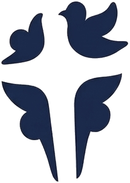

Evangelische Gemeente Ecclesia is een nieuw opgerichte gemeente, ontstaan vanuit de
vraag: wat als wij teruggaan naar de basis?
Volgelingen van de Heere Jezus, zoals de eerste gemeenten zijn ontstaan, met als basis
Gods Woord; de bijbel als onveranderlijke waarheid, oprechte broederlijke verbinding,
gemeenschappelijk delen in lief en leed.
Ecclesia betekent lichaam van Christus en dat zijn wij met alen die in Hem geloven, daarom mag iedereen zich hier welkom en thuis voelen. Ben jij op zoek naar rust en vrede? Ben jij op zoek naar de waarheid? Of misschien ken jij de Heere Jezus al als persoonlijke verlosser? Iedereen is welkom bij Ecclesia.
Iedere zondag komen wij samen om 10:00 uur voor een dienst vol aanbiddingsmuziek,
een eerlijke boodschap uit Gods Woord een moment om te delen, te bidden en aanbidden
met na afloop een moment van gezelige ontmoeting bij de koffie.
Wij geloven dat de Heer ons aan elkaar gegeven heeft om het mooiste geschenk; het
evangelie met elkaar te delen en te beleven.
Terug naar de basis
Wij hebben het verlangen de Heere Jezus te dienen, discipel te zijn, zoals in de eerste gemeenten. De Heere God heeft ons lief, niet omdat wij volmaakt zijn, maar omdat Hij ons ziet als Zijn kinderen, door het volbrachte offer van Zijn Zoon de Heere Jezus. Wij zijn alemaal zondaars, maar de zonden worden ons niet langer aangerekend door dit geweldige offer.
Gemeenschap
We zijn een gemeente van gebroken mensen in een gebroken wereld. Samen, vrijgekocht door Zijn bloed, vrij om Hem te dienen — ieder als Gods unieke schepping, met eigen talenten, geleid door de Heilige Geest.
Groei & ontdekking
Hij neemt ons bij de hand en richt ons op — geduldig, vrijwillig en zonder opgelegde dwang. Geleid door de Heilige Geest groeien we samen in liefde en vrijheid.Hij neemt ons bij de hand en richt ons op — geduldig, vrijwilig en zonder opgelegde dwang. Geleid door de Heilige Geest groeien we samen in liefde en vrijheid Met als doel steeds meer op de Heere Jezus te gaan lijken.
Open deuren
Iedereen die op zoek is naar God de Vader en open staat om zich door Hem te laten
veranderen naar hoe Hij jou bedoeld heeft, is van harte welkom. Want God houdt van je
zoals je bent, maar teveel om je zo te laten.
Iedereen is welkom om zo onder het Ware Woord te komen en dat Woord door de Heilige
Geest je leven te laten veranderen — op Zijn tijd, op Zijn manier.
Open deuren om uit te dragen. Evangeliseren in het dagelijks leven, de liefde van de
Heere Jezus laten zien in daad en woord.
In alles staat het volbrachte werk van de Heere Jezus centraal. Want al zo lief had God
deze wereld, dat Hij Zijn Enig Geboren Zoon, aan ons heeft gegeven, zodat wij niet
verloren zouden gaan, maar eeuwig zulen leven.
Jezus is de Weg, de Waarheid en Het Leven, niemand komt tot de Vader, dan door Hem.
Hoopvolle toekomst
Wij zien uit naar de wederkomst van de Heere Jezus, de Vredevorst die alle dingen nieuw zal maken. Aan alle tekenen van de tijd kunnen wij zien, en hierover lezen in Gods Woord, dat Zijn wederkomst aanstaande is. Maranatha! Heere Jezus, kom spoedig!